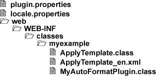

4.6.3. Creating an AutoFormat Plug-in
After having implemented the Auto-Format class, the compiled class needs to be added to Docmenta as a plug-in. Therefore, a plug-in has to be created as described in Chapter 4.2, Creating a plug-in package. Besides adding the Auto-Format class to the classpath, the class also needs to be registered in the Docmenta plug-in API. This is done when the plug-in is loaded by invoking the registerAutoFormatClasses method on the org.docma.plugin.ApplicationContext instance. That means, the implementation of the plug-in class has to be as follows (see Section 4.3.1, “Lifecycle methods” for details):
1
2
3
4
5
6
7
8
9
10
11
12
13
14
15
16
17
18
19
20
| package myexample;
import org.docma.plugin.ApplicationContext;
import org.docma.plugin.Plugin;
import org.docma.plugin.PluginContext;
public class MyAutoFormatPlugin implements Plugin
{
public void onLoad(PluginContext ctx) throws Exception
{
ApplicationContext app = ctx.getApplicationContext();
app.registerAutoFormatClasses("myexample.ApplyTemplate");
}
public void onUnload(PluginContext ctx) throws Exception
{
ApplicationContext app = ctx.getApplicationContext();
app.unregisterAutoFormatClasses("myexample.ApplyTemplate");
}
}
|
Listing 4.6.4. MyAutoFormatPlugin.java
As you can see in 4.6.4: MyAutoFormatPlugin.java, the onLoad method registers the myexample.ApplyTemplate class, and the onUnload method unregisters it.
To create the plug-in package, the compiled classes and the resource file ApplyTemplate_en.xml have to be included in a zip-file as illustrated in Figure 4.6.9, “Auto-Format example package”:

Figure 4.6.9. Auto-Format example package
Instead of placing the files in the web/WEB-INF/classes folder, the files could also be included as a jar-file and placed in the lib or web/WEB-INF/lib folder.
Following an example of the plugin.properties file:
id=my_autoformat
version=1.0
plugin_class=myexample.MyAutoFormatPlugin
required_app_version = 1.9
config_dialog = false
load_type = next_startup
Listing 4.6.5. plugin.properties (Auto-Format example)
In this example, the identifier my_autoformat is used for the plug-in. Finally, an example of the locale.properties file, which just contains a localized plug-in description:
my_autoformat.description = Auto-Format plug-in example
my_autoformat.help_url =
Listing 4.6.6. locale.properties (Auto-Format example)
Note that a help URL (my_autoformat.help_url) is not given, because our plug-in does not provide any configuration options that need to be explained. Furthermore, the Auto-Format class provides its own help through the getLongInfo method.
For details on creating a plug-in package see Chapter 4.2, Creating a plug-in package. The zip-file can now be installed as described in Section 2.7.5, “Installing Plug-ins”. Examples of using Auto-Format transformations can be found here: